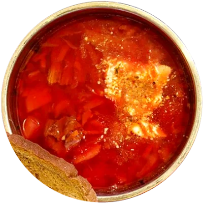

Домашняя кухня
Готовим из того,
что есть дома
Отметь продукты из холодильника — сайт подскажет, что приготовить прямо сейчас и что получится, если докупить пару продуктов.
- 60 блюдсупы, горячее, десерты
- 3 кухнирусская, итальянская, бургеры
- Мини-рецептыкоротко и по шагам

с любовьюДОМАвкуснее
Шаг первый
Что лежит в холодильнике?
Нажми на продукты, которые у тебя есть. Соль, перец, сахар, растительное масло и воду мы считаем всегда в наличии.
Шаг второй
Что можно приготовить
Пока продукты не выбраны, показываем все блюда.
Как это работает
Просто, как раз-два-три
Никакой регистрации. Выбранные продукты запоминаются на этом устройстве, так что в следующий раз не придётся отмечать всё заново.
Приятного аппетита!
- 01Отметь продуктыВсё, что есть в холодильнике и на полках.
- 02Выбери блюдоСначала то, что можно приготовить сразу.
- 03Докупи недостающееЧерез Яндекс Лавку — в один клик.
Связь с разработчиком
Нашли ошибку или есть идея?
Если что-то работает не так, не хватает любимого блюда или есть мысль, как сделать сайт удобнее, — напишите мне в Телеграм. Буду рад любому отзыву.